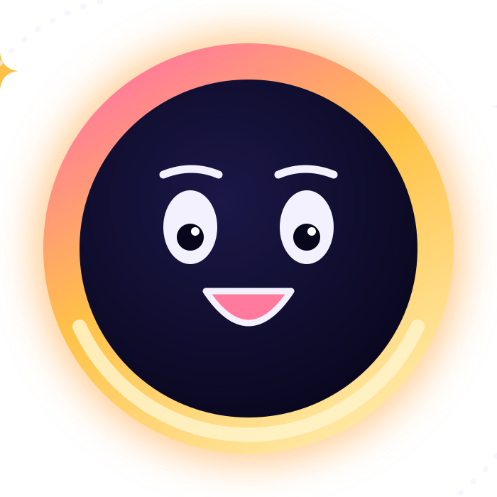

Superluna de diciembre 2026: hora y cómo verla en Nochebuena
Esta cita ya pasó. Mira las próximas.
Luna llena cerca de su punto más próximo a la Tierra. Mírala cuando salga, baja sobre el horizonte.

Superluna de Nochebuena
- España
- llena el 24 a las 2:28 (noche del 23 al 24)
- México
- llena el 23 a las 19:28
- Argentina
- llena el 23 a las 22:28
España: hora peninsular. México: Ciudad de México.
Añadir a Google Calendar¿A qué hora es la superluna de diciembre de 2026?
El 24 de diciembre a las 01:28 de tiempo universal: las 2:28 del 24 en España, las 19:28 del 23 en México y las 22:28 del 23 en Argentina.
¿Qué es una superluna?
Una Luna llena que coincide con la Luna cerca de su punto más próximo a la Tierra. Es un nombre popular.
¿Cuándo se ve más bonita?
Cuando acaba de salir, baja sobre el horizonte, junto a edificios o montañas.
Fuentes: NASA · timeanddate
Más citas con el cielo
- Luna nueva: la noche más oscura (9 de diciembre)
- Gemínidas: lluvia de estrellas (Noche del 13 al 14 de diciembre)
- Solsticio de diciembre (21 de diciembre)